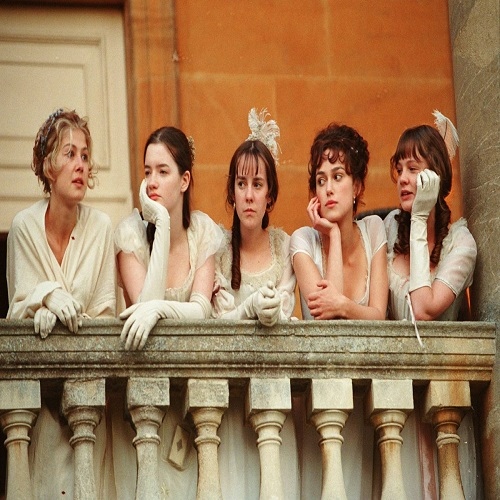

Англия, конец XVIII века.
Родители пятерых сестер Беннет озабочены тем, чтобы удачно выдать дочерей замуж.
И потому размеренная жизнь солидного семейства переворачивается вверх дном, когда по соседству появляется молодой джентльмен — мистер Бингли...
Само собой, среди друзей нового соседа оказывается немало утонченных аристократов, которые не прочь поухаживать за очаровательными сестрами.
Однако, все не так просто.
Своевольная Элизабет знакомится с другом Бингли — красивым и высокомерным мистером Дарси,
и между ними разгорается нешуточное противостояние, результатом которого может стать как любовь, так и ненависть...

персонажи
Мистер Беннет (англ. Mr Bennet)
Миссис Беннет
Мисс Джейн Беннет (англ. Jane Bennet)
Мисс Элизабет Беннет (англ. Ms Elizabeth Bennet)
Мисс Мэри
Мисс Кэтрин
Мисс Лидия
Мистер Чарльз Бингли
Мисс Кэролайн Бингли
Мистер Дарси (англ. Mr Darcy)
78924188+Dasha99-max@users.noreply.github.com
Истории создания
Джейн Остин начала работу над романом, когда ей едва исполнился 21 год.
Издатели отвергли рукопись, и она пролежала под сукном более пятнадцати лет.
Лишь после успеха романа «Разум и чувства», вышедшего в 1811 году, Джейн Остин смогла, наконец, опубликовать и своё первое детище.
Перед публикацией она подвергла его тщательной переработке и достигла необычайного сочетания: весёлости, непосредственности, эпиграмматичности, зрелости мысли и мастерства.
Экранизации
телесериал «Гордость и предубеждение» 1980
телесериал «Гордость и предубеждение» 1995
полнометражный фильм «Гордость и предубеждение» 2005 года